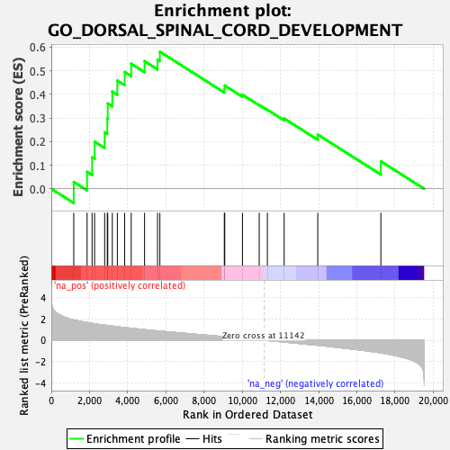
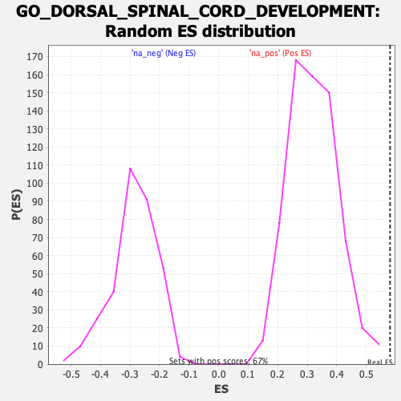

| | | Dataset | CK_basal |
| Phenotype | NoPhenotypeAvailable |
| Upregulated in class | na_pos |
| GeneSet | GO_DORSAL_SPINAL_CORD_DEVELOPMENT |
| Enrichment Score (ES) | 0.5807854 |
| Normalized Enrichment Score (NES) | 1.8209493 |
| Nominal p-value | 0.0 |
| FDR q-value | 0.273159 |
| FWER p-Value | 1.0 |
Table: GSEA Results Summary

Fig 1: Enrichment plot: GO_DORSAL_SPINAL_CORD_DEVELOPMENT
Profile of the Running ES Score & Positions of GeneSet Members on the Rank Ordered List
| SYMBOL | RANK IN GENE LIST | RANK METRIC SCORE | RUNNING ES | CORE ENRICHMENT | | 1 | MDGA1 | 1176 | 1.895 | 0.0291 | Yes |
| 2 | GSX1 | 1874 | 1.664 | 0.0719 | Yes |
| 3 | WNT3A | 2136 | 1.585 | 0.1333 | Yes |
| 4 | LHX5 | 2267 | 1.543 | 0.1994 | Yes |
| 5 | DRGX | 2794 | 1.414 | 0.2392 | Yes |
| 6 | UNCX | 2932 | 1.386 | 0.2975 | Yes |
| 7 | DAAM2 | 2956 | 1.380 | 0.3615 | Yes |
| 8 | PROX1 | 3196 | 1.327 | 0.4118 | Yes |
| 9 | HOXB8 | 3458 | 1.267 | 0.4582 | Yes |
| 10 | TAL1 | 3842 | 1.184 | 0.4944 | Yes |
| 11 | PAX7 | 4185 | 1.117 | 0.5296 | Yes |
| 12 | LMO4 | 4884 | 0.988 | 0.5405 | Yes |
| 13 | WNT1 | 5563 | 0.871 | 0.5468 | Yes |
| 14 | GDF7 | 5685 | 0.852 | 0.5808 | Yes |
| 15 | DRAXIN | 9060 | 0.327 | 0.4232 | No |
| 16 | LHX1 | 9083 | 0.323 | 0.4373 | No |
| 17 | GSX2 | 10011 | 0.180 | 0.3983 | No |
| 18 | LHX3 | 10887 | 0.041 | 0.3554 | No |
| 19 | PBX3 | 11314 | -0.028 | 0.3348 | No |
| 20 | GDNF | 12194 | -0.167 | 0.2976 | No |
| 21 | LBX1 | 13953 | -0.470 | 0.2297 | No |
| 22 | ASCL1 | 17257 | -1.185 | 0.1162 | No |
Table: GSEA details [plain text format]

Fig 2: GO_DORSAL_SPINAL_CORD_DEVELOPMENT: Random ES distribution
Gene set null distribution of ES for GO_DORSAL_SPINAL_CORD_DEVELOPMENT